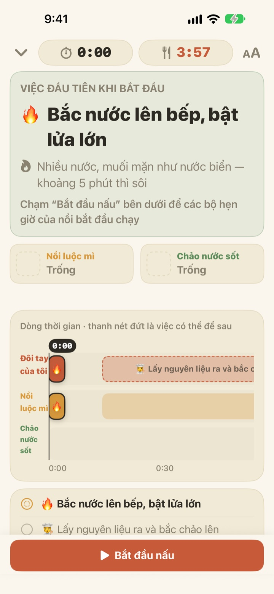
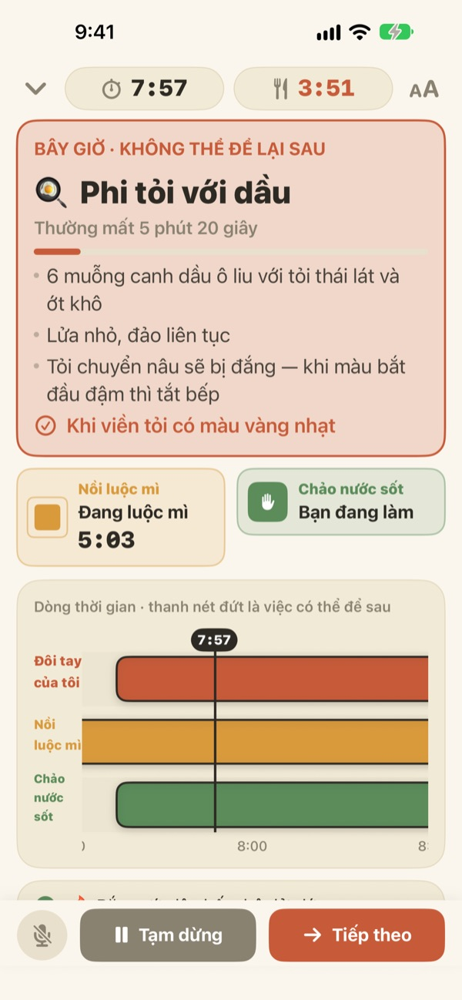
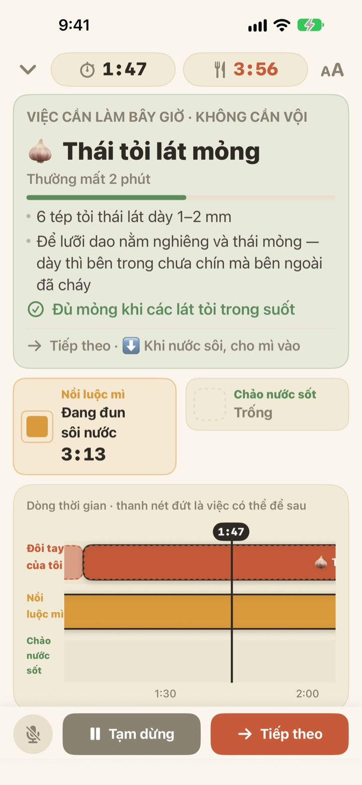
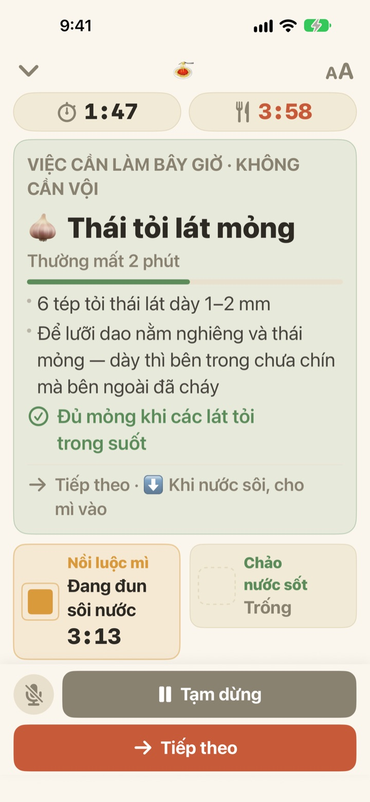

Trong lúc luộc mì,
nước sốt cũng xong
Khi hai nồi chạy theo nhịp khác nhau, Geusaie hiện chữ lớn đúng một việc tay bạn cần làm ngay bây giờ. Nước sốt được tính ngược từ lúc mì vớt ra.
Mọi tính năng đều miễn phí. Không cần tài khoản.

Thử ngay
Nấu một đĩa mì Ý aglio e olio ở tốc độ gấp 20 lần. Chạm Bắt đầu nấu, rồi chạm Tiếp theo mỗi khi bạn coi như đã xong một việc. Hãy xem thẻ thay đổi thế nào khi đến lúc vớt mì.
Đặt ba cái hẹn giờ mà mì vẫn bị nhũn?
Một hẹn giờ cho mì, một cho sốt, còn thời gian phi tỏi thì nhớ trong đầu, rồi chẳng biết việc nào trước. Đang thái tỏi thì lỡ lúc vớt mì, còn sốt xong muộn hơn mì hai phút. Geusaie hiểu công thức theo kiểu “xong việc này đến việc kia”, nên chỉ nói cho bạn đúng một việc cần làm lúc này.
Việc không thể chờ thì thẻ chuyển đỏ
Vớt mì, tỏi sắp cháy: khi đến việc mà trễ là hỏng món, thẻ chuyển sang màu đất nung và nhắc bạn tạm gác việc sơ chế.
Khi một nồi xong, bạn nhận thông báo dù không nhìn màn hình, kèm việc cần làm ngay.

Thái, bào chỉ làm khi rảnh tay
Thái tỏi, bào phô mai, cân đong: những việc này không gắn với đồng hồ nên ứng dụng không đếm từng giây. Thanh tiến độ chỉ tăng khi tay bạn rảnh, dừng khi nồi gọi và làm tiếp từ chỗ cũ khi bạn quay lại.
Bật bếp trễ ba phút thì các việc sau cũng lùi ba phút. Lịch được tính lại mỗi lần từ thời điểm bạn thực sự làm.

Dựng cạnh bếp, nói để qua bước
Phóng chữ được bốn mức để đứng cách một hai bước vẫn đọc rõ, và màn hình không tắt khi đang nấu.
Tay ướt? Hãy nói tiếp theo, ứng dụng sẽ sang việc kế tiếp mà không cần chạm màn hình.

Bắt đầu chỉ với ba bước
- 1
Chọn món
Chỉ cần xem mất khoảng bao lâu và cần mấy nồi.
- 2
Chạm Bắt đầu nấu
Ứng dụng cho xem việc đầu tiên trước, và đồng hồ của nồi chạy ngay khi bạn chạm.
- 3
Xong thì Tiếp theo
Chạm nút hoặc nói “tiếp theo”, việc kế tiếp sẽ hiện ra.
Màu sắc cho biết mức độ gấp
- Xanh lá
- Việc sơ chế. Cứ từ từ.
- Vàng mù tạt
- Đến lượt việc ở nồi. Làm bây giờ là được, chưa gấp.
- Màu đất nung
- Để lâu là mì nhũn hoặc tỏi cháy. Làm ngay.
- Ô của nồi
- Ô vuông co lại bao nhiêu là thời gian còn lại bấy nhiêu. Thời gian của nồi không bao giờ bị giấu.
Trên dòng thời gian, thanh nét đứt là việc có thể để sau.
Mọi tính năng đều miễn phí
Miễn phí
- Cả hai công thức
- Hẹn giờ riêng từng nồi và toàn bộ dòng thời gian
- Thông báo khi một nồi xong
- Nói “tiếp theo” để qua bước
- Bốn cỡ chữ
- Mở công thức bằng Siri hoặc Phím tắt
Ủng hộ nhà phát triển (tùy chọn)
- Nếu thấy hữu ích, bạn có thể gửi một khoản tip nhỏ trong Cài đặt
- Tip không mở khóa gì cả. Không gửi thì mọi tính năng vẫn như cũ
Tip trả từng lần, không phải gói đăng ký.
Không tài khoản, không quảng cáo, không có mạng vẫn nấu được.
Câu hỏi thường gặp
Nói “tiếp theo” mà không qua bước.
Nút micro ở góc dưới bên trái có màu đỏ khi đang nghe, màu xám khi đã tắt. Lần đầu bạn cần cho phép cả micro và nhận dạng giọng nói; nếu đã từ chối, hãy bật lại trong ứng dụng Cài đặt > Geusaie. Ứng dụng nghe đúng từ ghi trên nút Tiếp theo. Nếu bếp quá ồn, hãy chạm nút Tiếp theo ở dưới.
Nồi đã xong mà không có thông báo.
Hãy kiểm tra thông báo đã bật trong Cài đặt > Thông báo > Geusaie. Khi bật chế độ Tập trung, âm thanh có thể bị tắt. Thông báo chỉ đến khi một nồi xong; việc sơ chế như thái hay bào sẽ không nhắc để bạn khỏi bị hối thúc.
Bắt đầu trễ thì lịch nấu thế nào?
Lịch được tính lại từ thời điểm bạn thực sự làm. Bật bếp trễ ba phút thì các việc sau cũng lùi ba phút, còn nước sốt vẫn được tính ngược từ lúc mì vớt ra.
Chữ nhỏ quá.
Trên màn hình nấu, chạm nút cỡ chữ ở góc trên bên phải và chọn Thường, Lớn, Lớn hơn hoặc Lớn nhất. Lựa chọn của bạn được giữ cho lần sau.
Màn hình có tắt khi đang nấu không?
Không. Trong lúc nấu màn hình luôn sáng, để bạn không phải chạm vào khi tay ướt.
Có những món nào?
Mì Ý aglio e olio (khoảng 15 phút, 2 nồi) và mì Ý sốt kem cà chua (khoảng 20 phút, 2 nồi), dựa trên công thức của Serious Eats, Gimme Some Oven, RecipeTin Eats và The Burnt Butter Table. Món nào dùng hai nồi cùng lúc cũng hợp, nên hãy cho chúng tôi biết bạn muốn thêm công thức nào.
Giọng nói của tôi có bị lưu lại không?
Không. Ứng dụng chỉ nghe từ “tiếp theo”, không ghi âm và không lưu âm thanh. Nếu thiết bị hỗ trợ, việc nhận dạng chỉ diễn ra trên thiết bị. Không thu thập dữ liệu cá nhân.
Có mở bằng Siri được không?
Được. Chọn món trong Siri hoặc ứng dụng Phím tắt, màn hình nấu của món đó sẽ mở ngay. Đồng hồ chỉ chạy khi bạn sẵn sàng bắc nước và chạm Bắt đầu nấu.
Dùng được trên thiết bị nào?
iPhone và iPad chạy iOS 17 trở lên. Không cần tài khoản hay kết nối Internet.
Làm sao báo lỗi hoặc đề xuất công thức?
Gửi từ Cài đặt > Gửi góp ý trong ứng dụng, hoặc qua email bên dưới. Ghi kèm dòng máy và phiên bản iOS sẽ giúp chúng tôi kiểm tra nhanh hơn. Chúng tôi thường trả lời trong vài ngày.
Gặp khó khăn, thấy điều gì lạ hay muốn thêm công thức, hãy gửi về leeo@kakao.com.